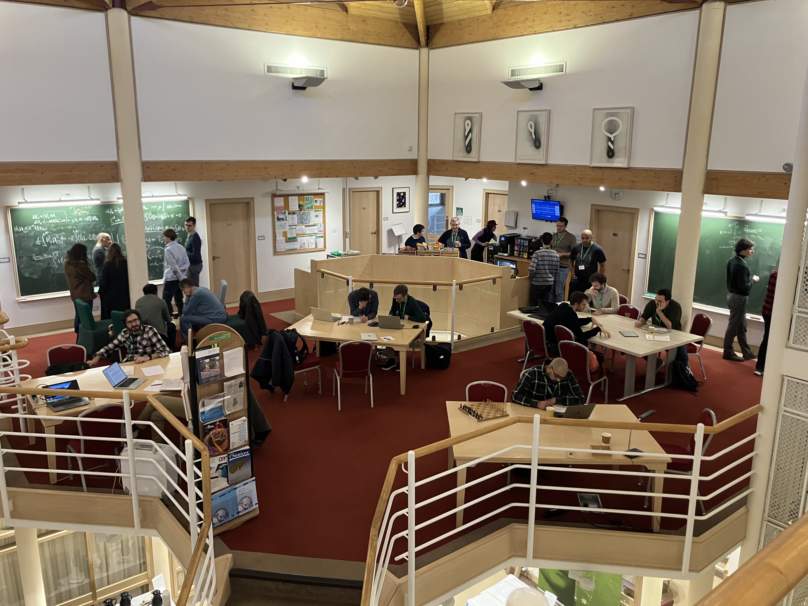

1 はじまり
11/4 からロンドンに１ヶ月ほど滞在します。
— Hirofumi Shiba (@ano2math5) September 27, 2024
ロンドン（広くイギリス）は自分の中ではベイズ計算の中心地の１つと目してますので大変楽しみです。 https://t.co/gaGrnnLTRl
11月3日から12月3日までの１ヶ月間，総研大の研究派遣プログラムの援助を受けて，イギリス・ロンドンの UCL (University College London) の Alexandros Beskos 教授を訪問した．
Alex は拡散過程の Monte Carlo シミュレーションや MCMC (Markov Chain Monte Carlo)，さらには SMC (Sequential Monte Carlo) と幅広い守備範囲を持つベイズ計算 (Bayesian Computation) の大家である．
UCL はロンドン大学 (University of London) に所属するカレッジの１つであり，「功利主義」の哲学で有名な Jeremy Bentham によって，世界で初めての性別・宗教・出自・肌の色に依らず入学できる大学として 19 世紀前半に創立された．
このような歴史もあり，UCL の統計の博士課程には極めて多様な背景（国籍・人種・宗教など）を持った学生が揃っている．自分はそのことが最も気に入った．Alex の学生にはイギリス出身の Chris や日本出身の井口さんがいた．他に筆者と仲良くしてくれた学生は，カナダ，ギリシャ，マレーシア，中国出身と，誰ひとり被っていなかった．
受入教員である Alex も元はギリシャの出身であり，滞在最後に一緒にご飯を食べたときには UCL で採用に至るまでの面接の苦労を話してくれた．
この多様性にみんな慣れていることもあってか，初のヨーロッパ体験に借りてきた猫状態だった自分も，滞在一週間も経たずに「馴染めた」「仲間にしてもらえた」と感じた．それにはイギリスのパブ文化の影響もあっただろう．
金曜日の夜にパブに行く文化があると事前に聞いていたから，勇気を出して Ph.D. 部屋に残っていた人を誘ってみた．５時だったが部屋にはほとんど人はいなかった．UCL はロンドンの中心にあり，その近くは大変家賃が高いため，多くの生徒は郊外に住む（Oxford から通っている学生もいる）．そのため５時には大抵の学生は帰ろうとし始めるのだ．（そして寮は博士１年生しか利用できない．）
中でも Teresa は帰って作り置きの夕飯を食べる予定だったところを変更してまで，僕の誘いを快諾してくれた．結局メンバーは５人にまで増え，まずはピザを食べにいき，その後パブで一杯飲んだ．
Teresa は台湾の出身であるが，カナダの McGill 大学で数学を専攻してから UCL の統計博士課程に進み，今は同時に医局で統計スタッフとして働いてもいる．自分が「イギリスどころかヨーロッパが初めてで，パブに行ってみたいが勇気が出ない」と素直に伝えると，当時の自分の境遇と重なったこともあってか，大変歓迎して友人も誘い合わせてパブへ連れて行ってくれたのである．
日本の飲み屋は食事とアルコールを同時に提供するが，イギリスではその２つの機能はレストランとパブが別々に担っているのだと自分は理解した．するとパブが必然的に「二軒目」になっており，その頃にはすっかり仲間だという感じになって腹をわった話ができる．大変不思議な感覚である．
2 研究環境
正直学生のレベル感は ISM とほとんど差を感じない．だが「ロンドン界隈」全体としては，総じて環境は全く違うと言わざるを得ないと感じた．
かの Thomas Bayes もロンドンがうんだように，イギリスでは現在もベイズの豊かな土壌があり，一週間のうちに必ずどこかではベイズ計算に関連するセミナーが開催されている．そして大変多くの人が集まるのである．この環境だけは世界の他のどこにもないだろう．
さらに滞在の最後に当たる 11/25（月）から 11/29（金）までの５日間，INI (Isaac Newton Institute) にてベイズ計算に特化したワークショップ Monte Carlo Sampling: Beyond the Diffusive Regime が行われた．
I’m here! https://t.co/N4YTmmJFCo
— Hirofumi Shiba (@ano2math5) November 25, 2024
この INI というのが大変興味深い組織である．1992 年に Cambridge 大学の２つのカレッジ St. Jones と Trinity の出資により設立された数理に特化した研究施設であるが，ここにパーマネントに所属する研究者というのは原則存在せず，基本は６ヶ月ごとに入れ替わる．しかしこの６ヶ月間というのは，テーマを決めてそれに関連する研究者を世界中から呼び込み，INI という一箇所に集めての「６ヶ月」なのである．
私が参加したこの５日間のワークショップも，Monte Carlo 法に関する研究プログラム Stochastic systems for anomalous diffusion の一環として開催されている．このワークショップの参加者も，希望すれば一定期間オフィスをもらい，ワークショップの前後に渡って滞在することができる．

INI にはありとあらゆるところに黒板が用意されている．トイレの中にもある．そのことがこんなにも違いを生むとは思わなかった．参加者は年齢に依らず，休み時間になると活発に議論をした．
Even in the bathroom, we have blackboard here.
— Hirofumi Shiba (@ano2math5) November 28, 2024
Really good environment. pic.twitter.com/61nZzXMSaw
3 Monte Carlo ワークショップ
このワークショップの最大の特徴は統計と物理の２分野の邂逅であった．Monte Carlo 法は物理学に端を発する計算技術であるが，今では統計学にも大きな研究コミュニティがあり，「ベイズ計算」はその一つである．統計と物理の研究者が語彙をすり合わせながら互いに歩み寄る極めて貴重な機会だったと言えるだろう．
Mpemba 効果（より熱い水の方が冷たい水より先に凍ることがある）への理解を深めれば，より速く収束する MCMC が作れるかもしれない……？
— Hirofumi Shiba (@ano2math5) November 26, 2024
Check out "Anomalous thermal relaxation on dense graphs with Metropolis-Hastings dynamics" by Marija Vuceljahttps://t.co/c9N7Eftmqx
最初の講演は “beyond the diffusive regime” という副題を象徴する統計物理学者である Werner Krauth 氏の発表から始まった．公式 YouTube チャンネルに アーカイブ が残っている．Werner は ECMC (Event Chain Monte Carlo) という新たな Monte Carlo 法を開発することで，水の融解の全粒子シミュレーションを世界で初めて成功させた．
diffusive regime とは熱平衡にある系が示す特徴である．したがって多峰性分布からも効率的にサンプリングができるような次世代の Monte Carlo 法をデザインするためには，diffusive regime から脱すること (= beyond the diffusive regime) がいくらか必要条件になる，ということから始まった．
続いて Werner は diffusive regime を超越する Monte Carlo 法に，「局所性」を破る HMC (Hamiltonian / Hybrid Monte Carlo) と「対称性」を破る ECMC / PDMP (Piecewise Deterministic Markov Process) の２つがあるとして，現状のベイズ計算を概観した．（ここでも二分野の語彙の違いが出ている，統計が PDMP と呼ぶものを物理は ECMC と呼ぶ．）
このプレゼンはワークショップ全体のアジェンダを設定したと言えるものであった．それだけでなく，その後ワークショップの全体を通して，Werner は最も影響力を持つ存在であった．何より，５日間を通して最前列で最も活発に質問するだけでなく，筆者のような修士の学生とも議論する時間を惜しまなかった．「英語では教授は Sir をつけて呼ぶべきなのだろうか」とか考えてひたすら恐れ入っている自分に “I’m also a learner here.” と対等に議論しようとふっかけてくれたことが嬉しかった．
Werner は７時にお腹が空いてどうしようもなくなるまで INI に残っていた．言語の壁を超えて伝わってくる人格があった．どこか現代の Feynman に出会ったような感覚であった．僕はこの仕事がますます好きになるばかりだ．
そこで翌日も INI に残っていたらどんな人に出会うかとワクワクしていたが，気づけば 10 時過ぎまでカードゲームをしていた．Andi Q. Wang 氏は MCMC の収束を関数不等式を用いて議論する研究をしている．彼はどの学会にもスウェーデンで買ったカードゲームを持参するようで，今回は Blood on Clocktower という人狼をさらに複雑にしたようなゲームを８人でプレイした．スウェーデンでは毎年１つボードゲームが無料でもらえるらしい．
研究の話じゃなくなると本当に英語は難しい．オランダ・ギリシャ・スロベニア・インドと，英語が母語じゃない研究者もたくさんプレイしていたはずであるが，彼らはとんでもなく英語がうまい．全く気後れしている様子がなかった．やはりインド・ヨーロッパ語族から外れた母語を持つと，ハンディキャップが大きいのだろうかなどと考えざるを得なかった．正直，ゲームは楽しいというより苦しかった．
Although some of my colleagues (might) praise me for my Englisg skills, I am useless itself when playing cardgame with people here.
— Hirofumi Shiba (@ano2math5) November 27, 2024
4 共同研究
今回のロンドン滞在の話は，実は最初は断るつもりであった．英語以前にも，そもそも自分は修士２年でまだ論文もなく，「滞在先の先生に何も提供できないのではないか」という懸念が後ろ髪を引いた．しかし，副指導教員の先生や家族に「失敗しても失うものはない」と大きく背中を押されたこともあり，自分の運命を受け入れることにした．
修士２年で夏休みを終えたばかりの自分はというと，いまいち指導教員の先生がやっているような MCMC や SMC の理論解析には踏み切れずにいた．MCMC や PDMP のアルゴリズムは十分理解したつもりだったし，使う数学にも慣れてきたが，いまいち心がついてこなかった．
そのような中で９月に奇縁でソウル大学の政治学者（かつベイジアン！）である Jong Hee Park （박종희）氏に PDMP について発表する機会があった．全く新しい MCMC であるからしばらくは戸惑っていたようであるが，話すうちに「これは使える！」という反応をもらった．
そのアイデアは要するに「モデル選択に使えるのではないか？」ということであった．すごく意外だった．
PDMP とは，従来の Metropolis-Hastings 法を非可逆化したアルゴリズムの，さらに提案分布の分散を小さくしていく極限を取ったものと考えることができる．その結果，割り切った (ballistic) ダイナミクスとより速いエルゴード収束レートをもつ．これにより Monte Carlo 分散を従来の MCMC より小さくできることが期待されていた．
自分はこのことを数学的に証明できたかもしれないが，だからといって PDMP が何の役に立つかを全く知らなかったのである．
そこで出発までの１ヶ月で PDMP サンプリングを実行するための パッケージ を作ってみた．ギリギリ動くものができた段階でロンドンに向かったのである．
正直，本当の興味はどちらかというと SMC と最適輸送の関係にあった．こちらの話も，なるほど interesting だと共感はしてもらえたが，アイデアが未成熟で具体的に次のステップに繋げることができなかった．しかしこの PDMP パッケージの話が出ると新たな方向が見えた．Alex 自身に PDMP に関する著作はないが，昨今 Graphical Model のベイズモデル選択には大きな興味があった．
そこで，パッケージの応用先の例として筆者がそれとなく挙げた巨大な階層モデル（理想点モデル）を PDMP で推定することと，そのモデル選択のための新種のトリックに大きく興味を持ったようだった．
INI の３日目（中間日）は午後には講演はなく，参加者は思い思いの場所で議論に耽っていた．Alex は自分のアイデアに大変興味を持ってくれて，PDMP の大家である Samuel Livingstone とその学生である Luke も誘い合わせてミーティングを企画してくれた．Luke は，殊に PDMP の具体的な統計モデルへの応用については現時点で世界で最も詳しい人間かもしれない．
僕が黒板に文字を書くなり，奥から Samuel が羽衣チョークを持ち出してきたときには笑った．Samuel は６ヶ月 INI に滞在しているメンバーであり，自室に羽衣チョークのストックを作っていたのである（UCL に黒板はない）．他の INI 滞在メンバーである，これまた PDMP の専門家である Georgios Vasdekis に至っては，６ヶ月の会期が終わると使い所がないからと１本プレゼントしてくれた．
Hagoromo （羽衣） chalk presented by Georgios pic.twitter.com/3x9POrgti3
— Hirofumi Shiba (@ano2math5) November 28, 2024
5 終わりに
３週間という長い期間 UCL に滞在でき，他の Ph.D. 学生と交流できたことと，今回の極めて自分の専門に焦点のあった INI のワークショップに参加できた意義は，計り知れないほど大きい．
自分は海を隔てれば同志がいることを知った．また INI ワークショップの講演者は，まるで自分が読んできた論文の著者リストであった．
論文を読むだけでなく，それについて他人とディスカッションすることは，全く別の行為であることを学んだ．ディスカッションを通じて，既存のリテラチャーに +1 をするような考え方だけでなく，遠く離れた２つのアイデアを結びつける「核」というものが特定できる気がする．
実際，自分の原稿であろうと，いざ黒板の前に立って思い出せることはごく一部なのである．アイデアは論文ではなく人に宿るのである……．
いろんな人と将来コラボしたいから広い知見と深い数学が欲しい。だが自分だけのオリジナルな結果も博士で欲しい。二つのバランスをずっと考えている。
— Hirofumi Shiba (@ano2math5) November 27, 2024